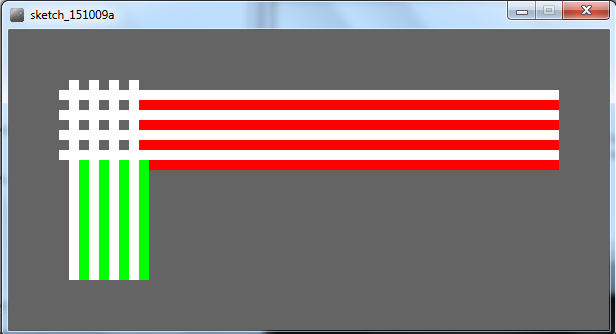

Objectives
variable scope · iteration · for loops · while loops · print · println
Variable scope (local and global)
In this step, we will implement the code examples 2.9 - 2.12 from your lectures.
Understanding variable scope
Create a new Processing sketch and call it Example_2_12. Note that we will be working through fixing the bugs we discussed in lectures and finish by saving just the completed, bug free version (i.e. 2.12).
Enter the following code into your sketch (one again, try avoid the temptation to cut and paste the code...the more mistakes you make when writing out code, the more you learn!):
void setup()
{
size(500,400);
background(0);
stroke(255);
fill(45,45,45);
}
void draw() {
int diameter = 100;
if (mousePressed)
{
diameter = diameter – 10;
background(0);
}
ellipse(mouseX, mouseY, diameter, diameter);
}Run your code. Is your circle reducing in size? Repeatedly press the mouse button...do you see a bug?
The diameter variable is declared in the draw() function i.e. it is a local variable.
It is only “alive” while the draw() function is running.
Each time the draw() function:
- finishes running, the diameter variable is destroyed.
- is called, the diameter variable is re-created.
To fix this, change your code so that the diameter variable is now global scope:
//The diameter variable is now global scope
int diameter = 100;
void setup()
{
size(500,400);
background(0);
stroke(255);
fill(45,45,45);
}
void draw()
{
if (mousePressed)
{
diameter = diameter - 10;
background(0);
}
ellipse(mouseX, mouseY, diameter, diameter);
}Run your code. Does it work as you would expect now?
There is a problem with the code. In the ellipse method, the width and height are absolute values (the negative sign is dropped...processing only cares about the magnitude).
To handle this logic bug, we need to stop reducing the diameter by 10 when we reach a certain value, say 20.
Implement this code boolean condition in your code and test it again:
int diameter = 100;
void setup()
{
size(500,400);
background(0);
stroke(255);
fill(45,45,45);
}
void draw()
{
//boolean condition added to stop reducing the diameter when it reaches 20.
if ((mousePressed) && (diameter > 20))
{
diameter = diameter - 10;
background(0);
}
ellipse(mouseX, mouseY, diameter, diameter);
}Did you notice that it seems the reduction appears larger than 10 when we press the mouse?
Why? The default frame rate is 60 refreshes of the screen per second i.e. draw() is called 60 times per second.
You can change the frame rate by calling the frameRate() function and passing a parameter of, say, 20. This will mean draw() will only be called 20 times in a second.
Make the change to the framerate:
int diameter = 100;
void setup() {
size(500,400);
background(0);
stroke(255);
fill(45,45,45);
frameRate(20); //slowed down to 20 refreshes per second.
}
void draw() {
if ((mousePressed) && (diameter > 20)){
diameter = diameter - 10;
background(0);
}
ellipse(mouseX, mouseY, diameter, diameter);
}Now your code should run as expected.
Save and close your sketch.
While Loops
In this step, we will implement the code examples 2.13 and 2.14 from your lectures. We will also do an exercise with a nested while loop.
while Loop
Create a new Processing sketch and call it Example_2_13.
Enter the following code into your sketch:
int yCoordinate = 60;
size(600, 300);
background(102);
fill(255);
noStroke();
int i = 0;
while (i < 4)
{
rect(50, yCoordinate, 500, 10);
yCoordinate = yCoordinate + 20;
i++;
}Run your code. This code should draw four white horizontal blocks as shown below:
Save your sketch.
Same loop, but without the yCoordinate variable
In the above sketch, do a Save as... and give it the name Example_2_14.
Make the necessary changes to remove the yCoordinate variable and update the while loop accordingly:
size(600, 300);
background(102);
fill(255);
noStroke();
int i = 60;
while(i <= 120)
{
rect(50, i, 500, 10);
i += 20;
}Run it and check that the same output as above is produced.
Save your sketch.
Nested While Loops
Create a new Processing sketch in your workspace and call it lab02b_step02.
Enter the following code into your sketchbook:
int i = 0;
while ( i < 4 ) {
int j = 0;
while (j < 4 ) {
println("The value of i is: " + i + " and j is: " + j);
j++;
}
i++;
}Run your code. This code should print out this series of lines to your console:
Look at these lines, in particular, look at the values printed for i and for j. Do you understand the mechanics of how the nested while loop works?
Save your sketch.
For loops
In this step, we will implement the for loop examples 2.15 & 2.16 from your lectures.
Convert a while loop to a for loop
Create a new Processing sketch in your workspace and call it Example_2_15.
The following code uses a while loop to draw four rectangles. Rewrite it so that it uses a for loop instead:
int yCoordinate = 60;
size(600, 300);
background(102);
fill(255);
noStroke();
int i = 0;
while (i < 4 )
{
rect(50, yCoordinate, 500, 10);
yCoordinate += 20;
i++;
}Run your code. Does it work as you would expect?
Save your work.
Remove the yCoordinate variable.
In the above sketch, do a Save as... and give it the name Example_2_16.
Now that you have the for loop working correctly, change (called refactoring in programming) the code so that it no longer has the variable yCoordinate. Update the loop to ensure that the yCoordinate functionality is not lost.
Save your work.
Rewriting the while nested loop
Create a new Processing sketch in your workspace and call it lab02b_step03.
Refactor the code below (a nested loop using while) to be a nested loop using the for loop.
int i = 0;
while ( i < 4 ) {
int j = 0;
while (j < 4 ) {
println("The value of i is: " + i + " and j is: " + j);
j++;
}
i++;
}Run your code. Does it work as you would expect?
Exercises
For each exercise listed below, create a new sketch.
You may need to visit the Processing website for additional information.
Exercise 1 (static drawing)
Create a display window of 400x400 with a grey background.
In the setup() method, use a for loop to draw a chessboard (for this exercise, use the line() method).
A chess board is an 8x8 grid and should look like the screen shot below:
Exercise 2 (static drawing)
Create a new sketch and re-write the Exercise 1 code to use while loops instead of for loops.
Exercise 3 (static drawing)
Create a new sketch and re-write the Exercise 1 code so that the chess board is drawn correctly regardless of the width and height of the display window.
Console Exercise 1
Create a new sketch and use a while loop and the println method to print hello 5 times to the console.
When you have it working using the while loop, refactor your code to use a for loop.
Console Exercise 2
Create a new sketch and use a for loop and the println method to print the numbers 1 to 10 to the console.
When you have it working using the for loop, refactor your code to use a while loop.
Console Exercise 3
Create a new sketch and use a while loop and the println method to print 10, 9, 8, 7, 6, 5, 4, 3, 2, 1, blast off to the console.
When you have it working using the while loop, refactor your code to use a for loop.
Console Exercise 4
Create a new sketch and use a for loop and the println method to print all the even numbers between 2 and 10 to the console.
When you have it working using the for loop, refactor your code to use a while loop.
Challenges
For each exercise listed below, create a new sketch.
You may need to visit the Processing website for additional information.
Challenge 1 (static drawing)
Create a new sketch and, using two while loops, draw this image:

When you have it working using while loops, convert the code to use for loops.
Challenge 2 (static drawing)
Create a new sketch and draw your chessboard on a 400x400 window using the rect() method instead of the line() method. You will need a nested for loop to do this.
Challenge 3 (static drawing)
Create a new sketch and using the code from Challenge Exercise 2, try to colour every subsequent square in a darker colour of gray, as shown in the image below:

Note: You will need to read up on the modulo (%) operator in order to do this exercise. This is quite a difficult exercise, so don't worry if you can't get it working.
Challenge 4 (static drawing)
Create a new sketch and using the code from Challenge Exercise 3, try to colour every subsequent white square in a darker colour of gray, as shown in the image below to give the illusion of lighting:
Solutions
The solutions for this lab can be found here.
If you require unzipping software, 7zip is a good choice: http://www.7-zip.org/ (or Keka for Mac http://www.kekaosx.com/en/)
After unzipping the solutions, it might be a good idea to copy the folders to your sketchbook folder. From Processing, you could then use File, followed by Sketchbook to easily open them.